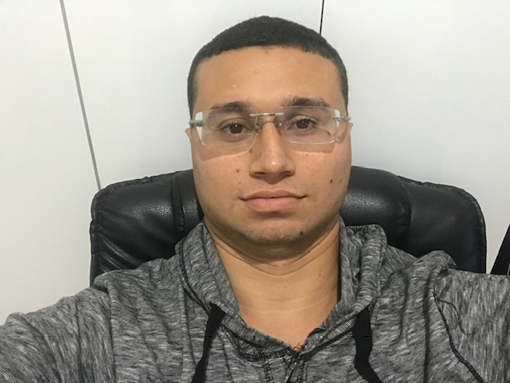

CURRICULUM VITAE
DAVI CAMPOS CARDOSO DA SILVA
IDENTIFICAÇÃO
Nascimento: 07/02/1990
Estado Civil: CASADO
FORMAÇÃO ACADÊMICA
Graduação:
- Analista e Desenvolvedor de Sistemas - Universo- Universidade Salgado de Oliveira
Cursando 1°periodo;
- Java Scripts – Curso Completo com 6 Projetos Reais – www.udemy.com
Cursando;
- Certificado Segurança em Tecnologia da Informação – Escola Virtual – Fundação Bradesco
Conclusão: 2019;
- Certificado Fundamentos de Lógica de Programação– Escola Virtual – Fundação Bradesco
Conclusão: 2019;
- Certificado Fundamentos de T I: hardware e software– Escola Virtual – Fundação Bradesco
Conclusão: 2019;
- Certificado Web Design– Escola Virtual – Fundação Bradesco
Conclusão: 2019;
- Certificado HTML - básico– Escola Virtual – Fundação Bradesco
Conclusão: 2019;
Técnico:
- Hardware e Redes(Montagem e Manutenção de Computadores)-CEBRAC
Data da conclusão: 10/11/2010;
- Formação para o Trabalho -ICASU
Data da conclusão: 22/11/2006;
- Informática básico(Windows, Word, Excel, Digitaçao)-Pró Info
Data da conclusão: 10/05/2015.
ATIVIDADES PROFISSIONAIS
- Nosso Lar-Material acabamento e decoraçao de casa
Período: 01/02/2011 a 24/10/2018
Função: Balconista;
- Prefeitura de Uberlandia
Período: 01/08/2009 a 23/12/2010
Função: Guarda Municipal;
- ICASU
Período: 03/05/2007 a 03/05/2008
Função: Guarda Mirim.